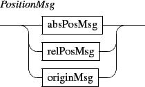

Next: 4.1 Positioning
Up: INScore OSC Messages Reference
Previous: 3. Scene messages
Contents
Index
4. Common components messages
Common messages are mainly intended to control the graphic appearance of the components and of the scene.
They could be sent to any address with the form /ITL/scene or /ITL/scene/identifier where identifier is the unique identifier string of a scene component.

- show: shows or hides the destination object. The parameter is interpreted as a boolean value. Default value is 1.
- del: deletes the destination object.
- export: exports an object to an image file.
The first form exports to the parameter file, which specifies a full path name. The file extension is used to infer the export format. Supported extensions and formats are: pdf, bmp, gif, jpeg, png, pgm, ppm, tiff, xbm, xpm.
The second form exports to path/identifier.pdf. When path is a relative path, it exports to rootPath/path/identifier.pdf. A scene identifier is 'scene'.
The third form exports to rootPath/identifier.pdf.
When the destination file is not completely specified (third form or missing extension), there is an automatic numbering of output names when the destination file already exists.
- save: recursively saves objects states to a file. The filePath can be relative or absolute. When relative, an absolute path is build using the current rootPath. The optional + parameter indicates an append mode for the write operation. The message must be sent to the /ITL address to save the whole application state.
- rename: rename the destination object. Changes its OSC address. Warning: OSC pattern matching allows to give the same name to a whole collection of objects; in this case, there is no way to individually address an object when its name is shared with other objects.
- 'PositionMsg' are absolute and relative position messages.
- 'ColorMsg' are absolute and relative color control messages.
- 'TimeMsg' are time management messages. They are described in chaper 5 p.
![[*]](crossref.gif) .
.
- 'clickSelectMsg' are provided to query objects relative positions.
Subsections
Next: 4.1 Positioning
Up: INScore OSC Messages Reference
Previous: 3. Scene messages
Contents
Index
Grame - Interlude project [ANR-08-CORD-010]